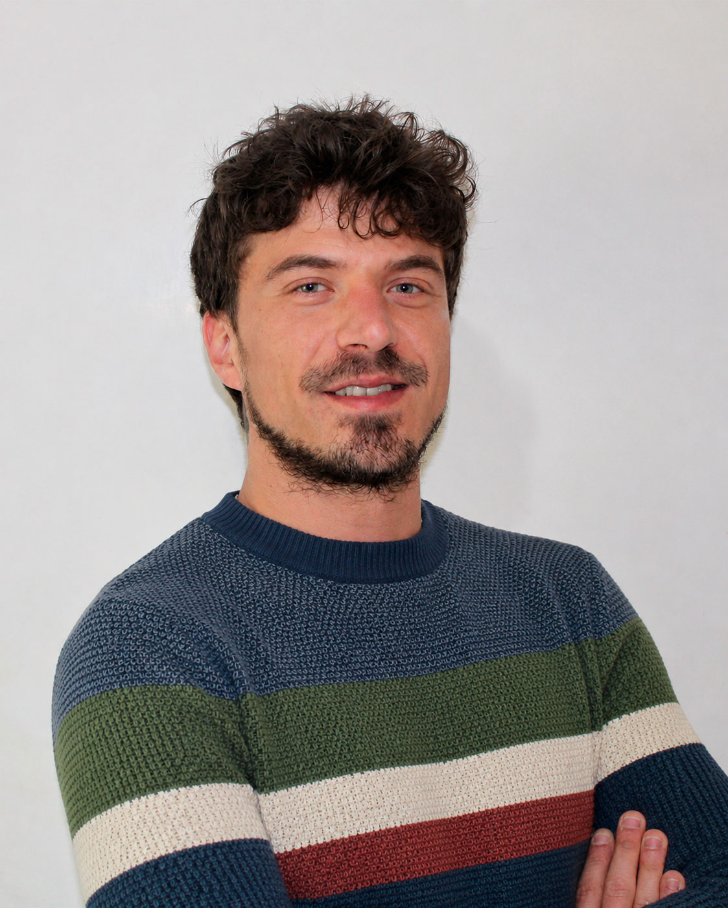

Design, stampa e sviluppo web
Creo esperienze
digitali.
Progetti visivi, strumenti digitali e soluzioni creative pensate per dare forma alle idee. Unisco estetica, funzionalità e attenzione al dettaglio per creare lavori chiari, moderni e coerenti, dal primo concept alla realizzazione finale.
Chi Sono
Grafica, stampa e web
in un unico profilo.
Mi chiamo Luca Cantale e lavoro da oltre 13 anni nel mondo della grafica, della stampa e della comunicazione visiva. Nel tempo ho seguito progetti molto diversi tra loro: loghi, brand identity, materiali pubblicitari, prodotti per la stampa, packaging, gadget personalizzati e contenuti per aziende, attività locali e professionisti.
Oggi affianco a questa esperienza anche lo sviluppo web, realizzando siti vetrina, landing page, e-commerce, template per marketplace e applicazioni web semplici. Il mio obiettivo è aiutare ogni cliente a costruire una presenza visiva coerente, professionale e concreta, dal primo file grafico fino al prodotto finale, online o stampato.

— Development
Siti web, e-commerce
e soluzioni digitali
Realizzo siti web professionali, landing page, e-commerce, template eBay e applicazioni web semplici pensate per esigenze reali. Ogni progetto viene costruito con attenzione al design, alla chiarezza dei contenuti, alla navigazione da desktop e mobile e alla facilità di gestione nel tempo.
— Design
Grafica, brand identity
e materiali per la stampa
Creo loghi, identità visive, grafiche pubblicitarie, impaginati editoriali, packaging, etichette, materiali promozionali e file pronti per la stampa. Ogni progetto nasce per comunicare in modo chiaro, valorizzare il brand e mantenere coerenza tra immagine digitale, supporti stampati e materiali aziendali.
Portfolio Grafico.
Una selezione di progetti di grafica, brand identity e comunicazione visiva.
Dalla progettazione del logo ai materiali stampati, il portfolio raccoglie lavori realizzati per aziende, professionisti, eventi e attività commerciali.
© Luca Cantale. Tutti i progetti presenti nel portfolio sono mostrati a scopo dimostrativo. È vietata la riproduzione, la modifica o l’utilizzo senza autorizzazione.
FIVERR
Cosa dicono i clienti
Oltre 30 recensioni su Fiverr, con rating 4.9, da clienti che hanno scelto i miei servizi di grafica, design e comunicazione visiva.
Contattami
Hai un progetto
da realizzare?
Scrivimi o contattami direttamente per parlare della tua idea, richiedere un preventivo o capire insieme quale soluzione è più adatta alle tue esigenze.